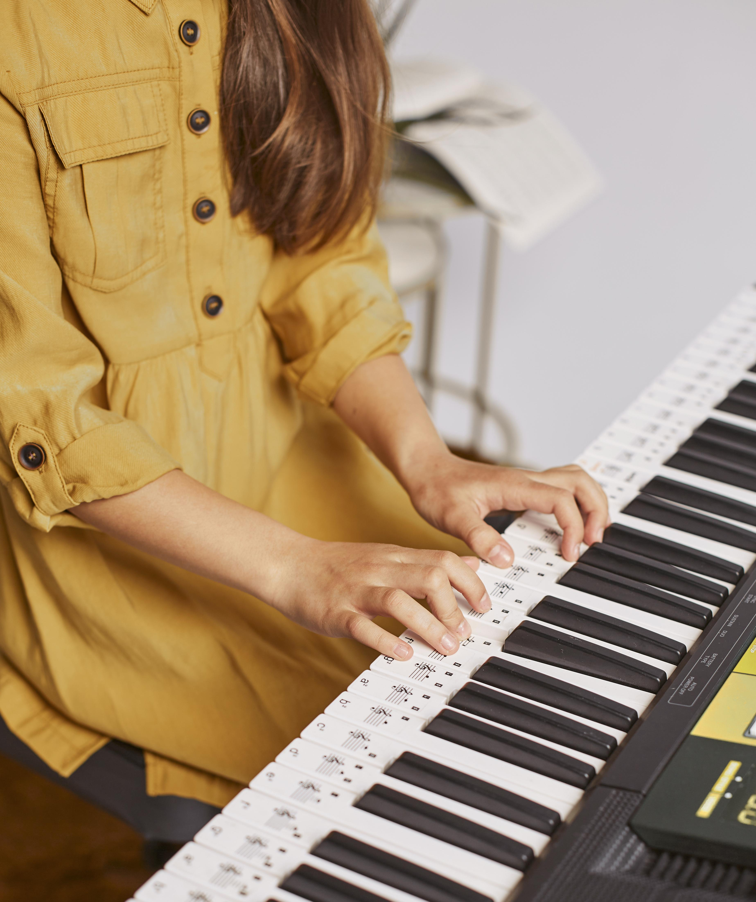

CARRERA DE MÚSICO PROFESIONAL
La carrera está estructurada para comenzar desde el nivel inicial y obtener al cabo de tres años
el título de Músico Profesional. También ofrecemos un cuarto año optativo de especialización en composición.
No es necesario que el alumno tenga conocimientos previos, pero si los tuviese puede hacer una
nivelación para determinar sus conocimientos e ingresar en el nivel correspondiente.
Si el aspirante nunca tuvo contacto con el instrumento, puede realizar un curso preparatorio en la modalidad taller.
Desarrollamos nuestro propio material para conformar un cuerpo teórico moderno y permanentemente
actualizado. Contamos con profesores de vasta experiencia en el campo de la enseñanza y con reconocido talento artístico,
quienes a través de sus conocimientos y experiencias guían a los estudiantes tratándolos desde el inicio como futuros colegas.
